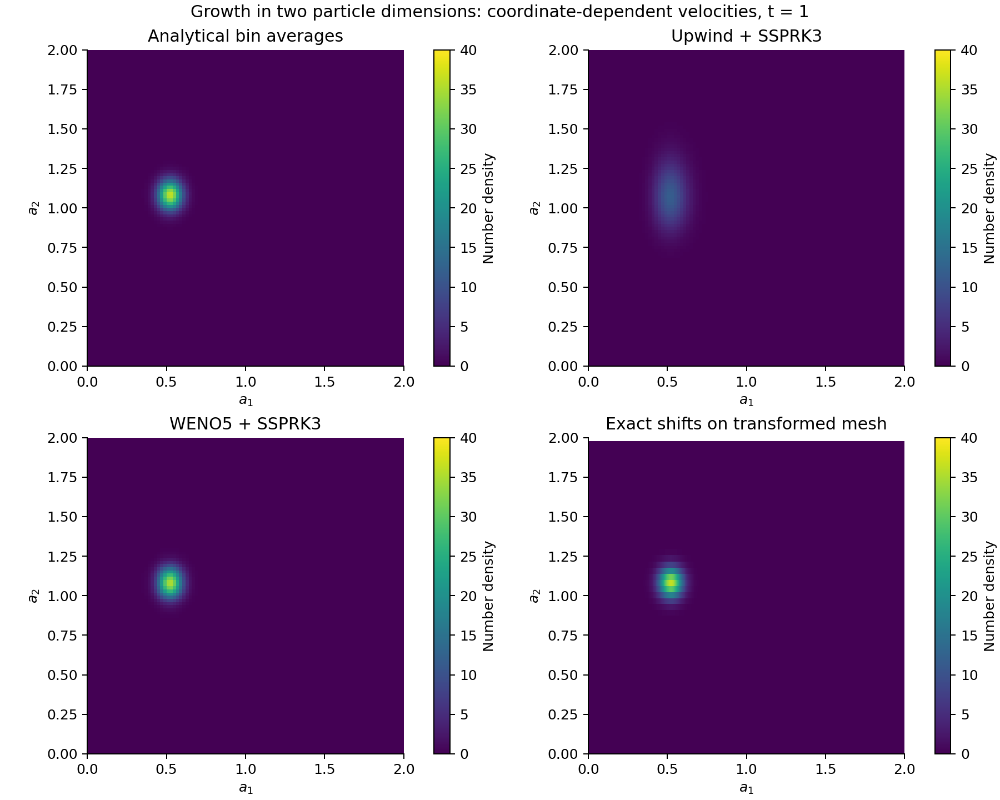
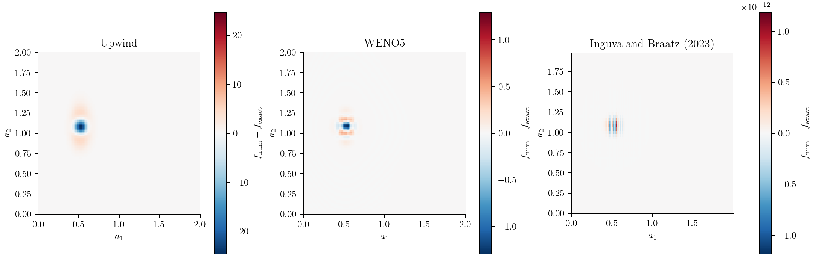
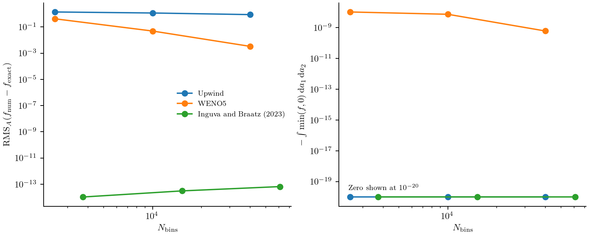

Growth in two particle dimensions
A particle can grow at different rates along two dimensions. A distribution that is initially narrow then moves and spreads in the plane of those particle properties. A useful numerical test is to predict both effects without adding artificial broadening or losing particles.
We choose a growth law for which each particle trajectory can be calculated exactly. This gives a reference for the whole distribution and lets us compare upwind, WENO5, and an exact shift on a transformed mesh. The model and initial condition are those of Inguva and Braatz (2023), Case 2. The two coordinates below describe particles, not positions in a vessel.
The population balance
Let $f(a_1,a_2,t)$ be the joint number density. Particles grow without nucleation, aggregation, or breakage:
\[\frac{\partial f(a_1,a_2,t)}{\partial t} +\frac{\partial\!\left[G_1(a_1)f(a_1,a_2,t)\right]}{\partial a_1} +\frac{\partial\!\left[G_2(a_2)f(a_1,a_2,t)\right]}{\partial a_2}=0,\]
where
\[G_1(a_1)=0.1+0.05a_1,\qquad G_2(a_2)=0.5+0.25a_2, \qquad 0\le a_1,a_2\le2.\]
Both velocities depend on the particle coordinate. Consequently, growth changes the height and width of the distribution as well as its position. Keeping the product inside each derivative accounts for this stretching.
Initially,
\[f(a_1,a_2,0)=50\exp\!\left[-\frac{(a_1-0.4)^2}{0.005} -\frac{(a_2-0.4)^2}{0.005}\right].\]
The standard deviation is 0.05 in each coordinate. This is a property of the initial population and stays fixed when the numerical grid is refined. We compare solutions at $t=1$, before appreciable population reaches an upper edge. The physical-grid solve uses zero incoming density at the lower edges and closed upper edges.
Enter the growth law and parameters
The script examples/inguva_braatz_case2.jl contains the model, reference integrals, and comparison runner. We use its parameter constructor so that the numerical and analytical calculations read the same values:
using PopulationBalanceModels
include(joinpath(pkgdir(PopulationBalanceModels),"examples","inguva_braatz_case2.jl"))
import .InguvaBraatzCase2
const study = InguvaBraatzCase2
p = study.parameters()(offset = (0.1, 0.5), slope = (0.05, 0.25), amplitude = 50.0, center = (0.4, 0.4), width = (0.05, 0.05))offset and slope specify the two affine velocities; amplitude, center, and width specify the initial Gaussian. The callback used in the script is:
function growth_rate(a1,a2,p,t,ctx)
(p.offset[1] + p.slope[1]*a1,
p.offset[2] + p.slope[2]*a2)
end
model = PBMModel(growth=Growth2D(rate=growth_rate))
growth_rate(0.4,0.4,p,0.0,nothing)(0.12000000000000001, 0.6)Growth2D passes both face coordinates and expects two coordinate velocities. The numerical method is supplied separately when the model is compiled.
Integrate the initial density over bins
A finite-volume state contains a number in each rectangular bin:
\[N_{ij}(t)=\int_{a_{1,i-1/2}}^{a_{1,i+1/2}} \int_{a_{2,j-1/2}}^{a_{2,j+1/2}}f(a_1,a_2,t)\,da_2\,da_1.\]
The reference routine evaluates these integrals from the Gaussian, avoiding an initial midpoint approximation. Here we use a small grid for an interactive run:
grid = Grid2D(range(0,2;length=41),range(0,2;length=41))
initial = study.reference(grid,0.0,p)
sum(initial)0.7853981633974477To reconstruct a density for plotting, call density(grid,initial). Dividing by one width rather than the bin area would give the wrong two-dimensional density.
Choose face fluxes, boundaries, and a time step
boundary = SizeBC(OpenBoundary(),NoFlux())
operator = compile(model,grid;
methods=TermMethods(growth=WENO5(epsilon=1e-12)),
bc=SizeBC2D(x=boundary,y=boundary))
problem = PBMProblem(operator,initial,(0.0,1.0);p)
dt = suggest_dt(operator,initial,p,0.0;cfl=0.4)
solution = simulate(problem;method=SSPRK33(),dt,saveat=[1.0],
check_nonnegative=false)Each directional face flux uses its own local growth velocity. The time-step estimate limits the sum of outgoing directional Courant numbers to 0.4. The velocity is independent of time and state here, so this estimate does not need updating during the run.
Upwind is selected by changing growth=WENO5(...) to growth=Upwind() and recompiling. SSPRK33 advances either residual. WENO5 has no positivity limiter; this diagnostic run disables rejection of negative populations so that the comparison can report undershoots. Ordinary simulation enables that check. Neither path clips negative values.
Compare with the analytical solution
The particle trajectories obey $da_i/dt=G_i(a_i)$. Tracing back from a final coordinate to its initial value gives
\[\xi_1=(a_1+2)e^{-0.05t}-2,\qquad \xi_2=(a_2+2)e^{-0.25t}-2.\]
Conservation of particle number along these expanding trajectories gives
\[f(a_1,a_2,t)=f(\xi_1,\xi_2,0)e^{-0.30t}.\]
Zero incoming density is used when a starting point lies outside the initial domain. The exponential factor accounts for area expansion. The initial peak at $(0.4,0.4)$ travels to approximately $(0.5231,1.0817)$ at $t=1$ and its height falls from 50 to $50e^{-0.30}$.
We compare each numerical bin number with the integral of this solution over the same bin:
truth = study.reference(grid,1.0,p)
final = solution.u[end]
(integrated_absolute_error=sum(abs,final-truth),
minimum_density=minimum(density(grid,final)))(integrated_absolute_error = 0.3203482444672703, minimum_density = -1.4834238351555818e-7)This avoids interpreting the difference between a centre value and a bin average as a solver error.
Shift on a travel-time mesh
The coordinate-dependent velocities can also be handled by changing variables. Define the travel time from the origin along each growth trajectory:
\[\tau_1(a_1)=\frac{\ln(1+a_1/2)}{0.05},\qquad \tau_2(a_2)=\frac{\ln(1+a_2/2)}{0.25}.\]
The density per travel-time area is $F(\tau_1,\tau_2,t)=G_1(a_1)G_2(a_2)f(a_1,a_2,t)$. It satisfies
\[\frac{\partial F(\tau_1,\tau_2,t)}{\partial t} +\frac{\partial F(\tau_1,\tau_2,t)}{\partial \tau_1} +\frac{\partial F(\tau_1,\tau_2,t)}{\partial \tau_2}=0.\]
Only in these new coordinates are the velocities constant. A uniform travel-time mesh with $\Delta\tau_1=\Delta\tau_2=\Delta t$ lets InguvaBraatz2023 move the state one cell in each direction without interpolation:
law = SeparableGrowth2D(AffineGrowth(p.offset[1],p.slope[1]),
AffineGrowth(p.offset[2],p.slope[2]))
dt_shift = 0.05
physical_grid = characteristic_grid(law,((0.0,2.0),(0.0,2.0));
dt=dt_shift,endpoint=:truncate)
open_ends = SizeBC(OpenBoundary(),OpenBoundary())
shift_operator = compile(PBMModel(growth=Growth2D(law)),physical_grid;
evolution=InguvaBraatz2023(),bc=SizeBC2D(x=open_ends,y=open_ends))
shift_problem = PBMProblem(shift_operator,study.reference(physical_grid,0.0,p),
(0.0,1.0);p)
mapped = (problem=shift_problem,physical_grid=physical_grid,dt=dt_shift)
shifted = simulate(mapped.problem;dt=mapped.dt,saveat=[1.0])
physical_density = density(mapped.physical_grid,shifted.u[end])
sum(abs,shifted.u[end]-study.reference(mapped.physical_grid,1.0,p))1.0495265616500905e-14Bin number is unchanged by the transformation; do not multiply it by the Jacobian a second time. To recover $f$, divide by the physical bin areas, as in the last block.
This mesh keeps whole travel-time cells inside the 0–2 domain, omits fractional end cells, and uses paired open boundaries. Its nonuniform physical mesh and actual extents are recorded with the results. The comparison adapts the transformed-mesh method to bin averages; it does not reproduce the paper's nodal implementation or SharpClaw settings. The compiler checks the independent growth laws, positivity, common travel-time spacing and boundaries. The solver checks the time step and output alignment before advancing. The older ExactShift interface remains restricted to constant velocities.
HOCADI is also restricted to constant velocities, and additionally requires periodic boundaries. Applying it directly to this physical problem is unsupported. Its periodic stability audit tests the implemented compact variant separately and reports its oscillations and negative undershoots.
Generate the two-dimensional plots
julia --project=. examples/inguva_braatz_case2.jl
python docs/benchmarks/plot_case_studies.py transportThe runner compares uniform 50-, 100-, and 200-bin axes and corresponding transformed meshes. It writes solution fields and signed errors, together with integrated absolute error, maximum error, minima, and negative number. RMSE is the unweighted root mean square over bins; RMS_area weights squared density errors by physical bin area. They agree on a uniform mesh but generally differ on the transformed mesh. Error norms from different meshes must be read with their respective resolutions and extents.
The following values are read from the saved comparison data:
| Method | Bins (a₁ × a₂) | Area RMS density error | Minimum density |
|---|---|---|---|
| Upwind | 100 × 100 | 1.17 | 3.0500000000000005e-64 |
| WENO5 | 100 × 100 | 0.049 | -1.92e-7 |
| Inguva–Braatz 2023 | 277 × 55 | 3.09e-14 | 0.0 |
| Upwind | 200 × 200 | 0.879 | 2.2899999999999997e-104 |
| WENO5 | 200 × 200 | 0.00331 | -8.43e-8 |
| Inguva–Braatz 2023 | 554 × 110 | 6.57e-14 | 0.0 |
Upwind spreads the narrow peak substantially. WENO5 reduces that broadening under refinement but still produces small negative lobes. The mapped shift matches its own analytical bin integrals to roundoff because this separable growth law permits an exact travel-time map and compatible integer shifts. That result does not apply to arbitrary size-dependent velocities.



The last figure uses actual total bin counts for each mesh. It compares accuracy and undershoots, not elapsed runtime. The transformed mesh exploits the known characteristics; its near-roundoff error is specific to this compatible problem.
Complete runnable script
The code below is read from the example source during the documentation build. Run it from the repository root using the environment described above.
examples/inguva_braatz_case2.jl
module InguvaBraatzCase2
using PopulationBalanceModels
export parameters, growth_rate, initial_density, analytical_density, reference, problem, mapped_problem, run_benchmark
const FINAL_TIME=1.0
const NORMAL=GaussianNucleation((p,t,ctx)->1.0;center=0.0,width=1.0,truncation=:physical)
"""Affine growth Gᵢ=offsetᵢ+slopeᵢ*aᵢ and the initial Gaussian, in the benchmark's units."""
parameters(;offset=(0.1,0.5),slope=(0.05,0.25),amplitude=50.0,
center=(0.4,0.4),width=(0.05,0.05))=(;offset,slope,amplitude,center,width)
function growth_rate(x,y,p,t,ctx)
(p.offset[1]+p.slope[1]*x,p.offset[2]+p.slope[2]*y)
end
initial_density(x,y,p=parameters())=p.amplitude*exp(-0.5*((x-p.center[1])/p.width[1])^2-
0.5*((y-p.center[2])/p.width[2])^2)
foot(x,t,b,s)=iszero(s) ? x-b*t : x*exp(-s*t)+b*expm1(-s*t)/s
function analytical_density(x,y,t,p=parameters())
x0=foot(x,t,p.offset[1],p.slope[1]);y0=foot(y,t,p.offset[2],p.slope[2])
0<=x0<=2 && 0<=y0<=2 ? initial_density(x0,y0,p)*exp(-sum(p.slope)*t) : 0.0
end
# Integrate in the initial coordinates: f da1 da2 = f0 da10 da20.
function axis_integrals(axis,t,b,s,center,width)
[begin
lo=max(0.0,foot(axis.edges[i],t,b,s));hi=min(2.0,foot(axis.edges[i+1],t,b,s))
hi<=lo ? 0.0 : width*sqrt(2π)*NORMAL.fraction((lo-center)/width,(hi-center)/width,(;),t,(;))
end for i in 1:length(axis)]
end
function reference(grid,t,p=parameters())
integrals=map((grid.x,grid.y),p.offset,p.slope,p.center,p.width) do axis,b,s,center,width
axis_integrals(axis,t,b,s,center,width)
end
p.amplitude.*(integrals[1]*integrals[2]')
end
function problem(n=100;scheme=WENO5(epsilon=1e-12),p=parameters())
grid=Grid2D(range(0,2;length=n+1),range(0,2;length=n+1))
boundary=SizeBC(OpenBoundary(),NoFlux())
model=PBMModel(growth=Growth2D(rate=growth_rate))
operator=compile(model,grid;methods=TermMethods(growth=scheme),bc=SizeBC2D(x=boundary,y=boundary))
PBMProblem(operator,reference(grid,0.0,p),(0.0,FINAL_TIME);p)
end
"""
Compile the public InguvaBraatz2023 method on its physical travel-time mesh.
A common travel-time increment dt moves one cell on both axes.
The end cells are truncated to whole travel-time cells inside [0,2]; the
physical mesh extent is recorded. No partial final cell is silently remapped.
"""
function mapped_problem(steps=20;p=parameters())
steps>=2 || throw(ArgumentError("at least two steps required"))
all(>(0),p.offset) && all(>=(0),p.slope) ||
throw(ArgumentError("this travel-time adapter requires positive offsets and nonnegative slopes"))
dt=FINAL_TIME/steps
law=SeparableGrowth2D(AffineGrowth(p.offset[1],p.slope[1]),AffineGrowth(p.offset[2],p.slope[2]))
physical_grid=characteristic_grid(law,((0.0,2.0),(0.0,2.0));dt,endpoint=:truncate)
boundary=SizeBC(OpenBoundary(),OpenBoundary())
operator=compile(PBMModel(growth=Growth2D(law)),physical_grid;
evolution=InguvaBraatz2023(),bc=SizeBC2D(x=boundary,y=boundary))
problem=PBMProblem(operator,reference(physical_grid,0.0,p),(0.0,FINAL_TIME);p)
(;problem,physical_grid,dt)
end
function write_field(path,grid,N)
open(path,"w") do io
println(io,"a1,a2,density,lower_a1,upper_a1,lower_a2,upper_a2")
f=density(grid,N)
for j in axes(N,2),i in axes(N,1)
println(io,join((grid.x.centers[i],grid.y.centers[j],f[i,j],
grid.x.edges[i],grid.x.edges[i+1],grid.y.edges[j],grid.y.edges[j+1]),','))
end
end
end
function metrics(N,truth,grid)
area=grid.x.widths*grid.y.widths';e=(N.-truth)./area;f=density(grid,N)
(;RMSE=sqrt(sum(abs2,e)/length(e)),MAE=maximum(abs,e),L1=sum(abs,N.-truth),
RMS_area=sqrt(sum(abs2.(e).*area)/sum(area)),
minimum_density=minimum(f),negative_number=-sum(min.(N,0.0)))
end
function run_benchmark(;grids=(50,100,200),output=joinpath(@__DIR__,"..","docs","src","assets","inguva_case2"))
mkpath(output);rows=NamedTuple[]
for n in grids
for (label,scheme) in (("upwind",Upwind()),("weno5",WENO5(epsilon=1e-12)))
prob=problem(n;scheme);grid=prob.operator.grid
dt=suggest_dt(prob.operator,prob.u0,prob.p,0.0;cfl=0.4)
sol=simulate(prob;dt,saveat=[1.0],check_nonnegative=false)
truth=reference(grid,1.0,prob.p)
row=merge((;resolution=n,method=label,nx=length(grid.x),ny=length(grid.y),dt,
upper_a1=last(grid.x.edges),upper_a2=last(grid.y.edges)),metrics(last(sol.u),truth,grid))
push!(rows,row);println(row)
if n==100 || n==maximum(grids)
write_field(joinpath(output,"$(label)_$(n).csv"),grid,last(sol.u))
label=="upwind" && write_field(joinpath(output,"reference_$(n).csv"),grid,truth)
end
end
mapped=mapped_problem(max(2,n÷5))
sol=simulate(mapped.problem;dt=mapped.dt,saveat=[1.0])
grid=mapped.physical_grid;truth=reference(grid,1.0,mapped.problem.p)
row=merge((;resolution=n,method="mapped_shift",nx=length(grid.x),ny=length(grid.y),dt=mapped.dt,
upper_a1=last(grid.x.edges),upper_a2=last(grid.y.edges)),metrics(last(sol.u),truth,grid))
push!(rows,row);println(row)
if n==100 || n==maximum(grids)
write_field(joinpath(output,"mapped_shift_$(n).csv"),grid,last(sol.u))
write_field(joinpath(output,"mapped_reference_$(n).csv"),grid,truth)
end
end
open(joinpath(output,"errors.csv"),"w") do io
println(io,join(keys(first(rows)),','))
for row in rows;println(io,join(values(row),','));end
end
open(joinpath(output,"environment.txt"),"w") do io
println(io,"Inguva & Braatz (2023), Case 2, Eqs.57–60; Figure 4 at t=1.")
println(io,"Julia ",VERSION,"; package ",Base.pkgversion(PopulationBalanceModels),"; ",Sys.KERNEL,' ',Sys.ARCH)
println(io,"Conservative FV comparison uses bin-integrated numbers; output densities are bin averages.")
println(io,"Mapped shifts use the public InguvaBraatz2023 compilation, a common travel-time spacing and paired open boundaries.")
println(io,"Uniform FV grids cover [0,2]^2; mapped grids omit fractional last cells, extents recorded in errors.csv.")
println(io,"Mapped comparison is a bin-average adaptation, not the paper's nodal implementation.")
println(io,"HOCADI cannot solve this variable-growth problem directly and is not included.")
end
rows
end
if abspath(PROGRAM_FILE)==@__FILE__;run_benchmark();end
end